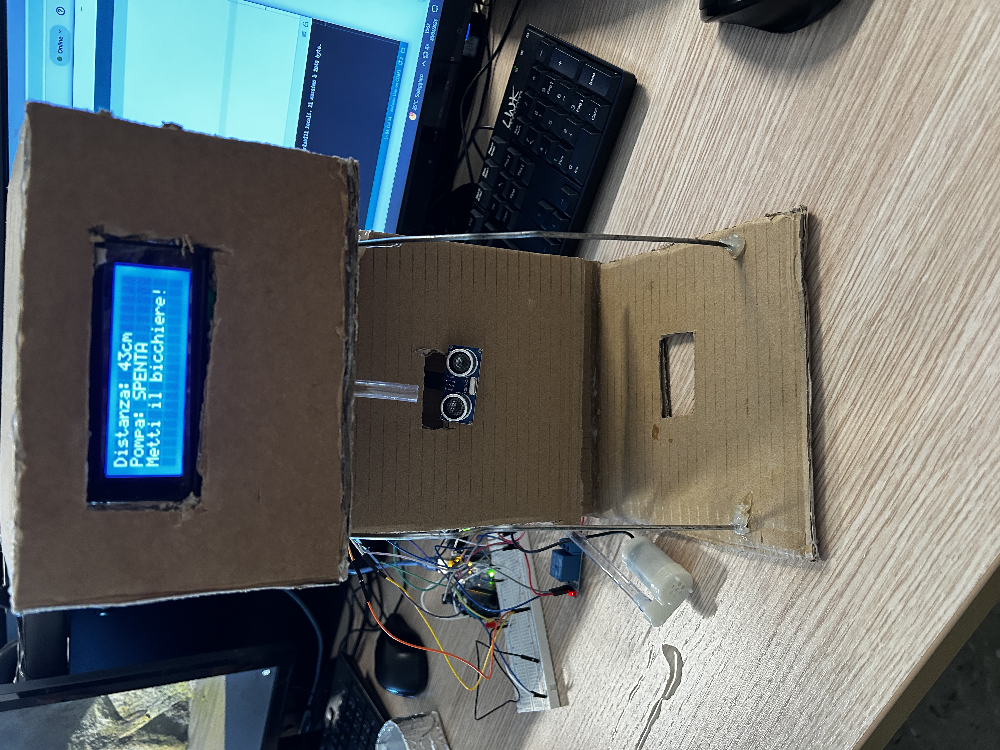
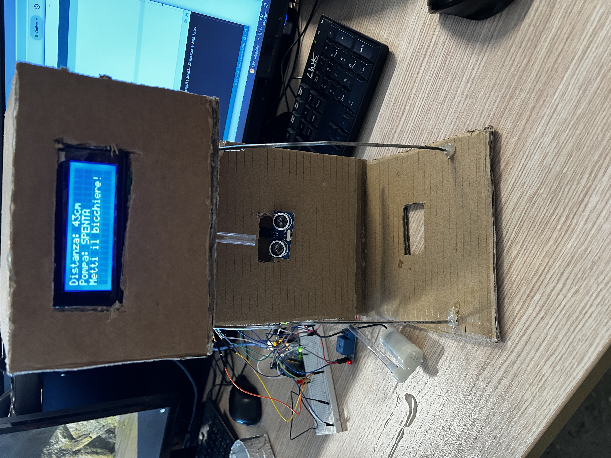
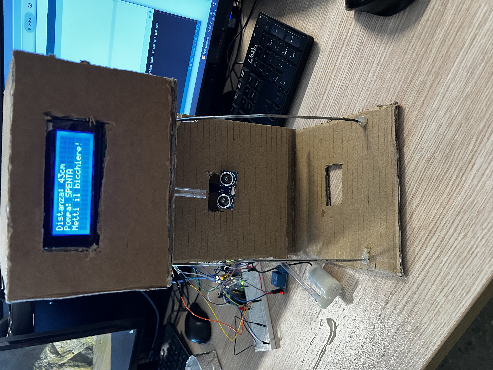

Progetto in fase di esecuzione
 

Il dispenser d'acqua automatico realizzato con Arduino è un sistema innovativo per gestire automaticamente il flusso d'acqua. È adatto per applicazioni domestiche e può essere adattato per molteplici utilizzi.

Il dispenser automatico utilizza un sensore di movimento per rilevare il bicchiere. Quando viene rilevato il bicchiere, Arduino attiva la pompa dell'acqua per fornire il flusso d'acqua che arriva direttamente nel bicchiere. Il display LCD mostra informazioni utili come: se la pompa è accesa o spenta, la distanza che calcola il sensore a ultrasuoni e un commento in base se c'è o no il bicchiere. Tutto questo è controllato da un codice programmato su Arduino per gestire i componenti in modo coordinato.